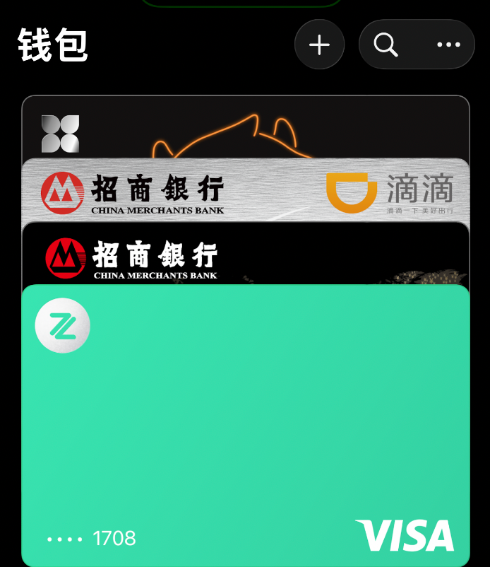

Aoi M
@aoim33
@AI_Jasonyu za，hsbc，天星这三个香港银行的不还是需要去香港开？
建议发出来之前检查ai生成内容的准确性喵

鱼总聊AI
@AI_Jasonyu
都2026年了，还是有很多人连个海外的银行卡都没有。
连个ChatGPT Plus都充值不了。
港卡都不说了，得去香港，但是至少一些虚拟的银行卡用来支付得有吧？我目前可以海外消费的卡有这几个：
1、Payonner的虚拟卡，可以开20多张卡片；
2、Pingpong的虚拟卡，2U一张，没显示限制； https://t.co/EwPUdBpTat